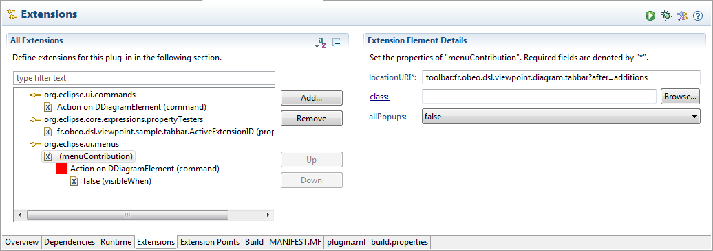
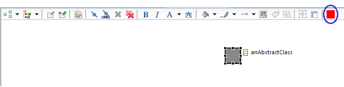

The top area of all Sirius diagram editors is filled with the tab-bar, which provides access to many operations on diagrams and their elements. The content of the tab-bar will depends on whether the current selection is the diagram itself (i.e. no element is selected) or one or several diagram elements.
When the diagram itself (and not a specific element) is selected, the tab-bar contains the following buttons:
The tab-bar contains a different set of actions when at least one element is selected:
Sirius allows to define new operations and to add them at the end of the tab-bar.
Sirius asks the workbench’s
IMenuService service to populate the tab-bar with provided contributions. This service leans on the
org.eclipse.ui.menus extension point.
Sirius defines the tab-bar as a toolbar with the id
org.eclipse.sirius.diagram.ui.tabbar.
Menu contributions to tab-bar must be declared with the
toolbar scheme and the Sirius tab-bar id.
You can use the insertion point part of the locationUri to organize your contributions. Sirius defines the additions group, this group and all contribution will be placed at the end of the tab-bar.
You can choose when to make your contribution visible (see the example) with the visibleWhen element and some property testers: show a menu for diagram selection or only on some diagram with a specific description, ... Sirius defines several property testers like org.eclipse.sirius.diagram.ui.isDDiagram and org.eclipse.sirius.diagram.ui.isDDiagramElement, but you can define your own domain specific testers.
org.eclipse.ui.menus extension point
Please refer to this extension point documentation for more details.
org.eclipse.ui.commands extension point
Please refer to this extension point documentation for more details.
The following example defines a new push button for the tab-bar. The contribution will only be visible when an element is selected on diagram which correspond to a specific description.
You have to add your menu contribution in the plugin.xml file.

The first step is to create the menu contribution to reference an existing command:
<extension point="org.eclipse.ui.menus">
<menuContribution
allPopups="false"
locationURI="toolbar:org.eclipse.sirius.diagram.ui.tabbar?after=additions">
<command
commandId="org.example.myproject.command.id"
icon="images/action.gif"
id="org.eclipse.sirius.diagram.tabbar.test.action.on.diagramelement"
label="Action on DDiagramElement"
tooltip="Action on DDiagramElement">
<!-- [...] a visible when element will be added later to control the visibility -->
</command>
</menuContribution>
</extension>
The
locationURI references the Sirius tabbar with
toolbar:org.eclipse.sirius.diagram.ui.tabbar and and insertion point
?after=additions.
The command element references an existing
commandID, and defines its own menu id (can be used as insertion/organization point in other contributions
locationURI), its label and tooltip. If a key binding exists on the referenced command, the workbench will add it to the tooltip.
Then you can control the visibility of your contribution with a visible when element.
<!-- [...] continued from the example above -->
<visibleWhen checkEnabled="false">
<and>
<with variable="activeEditorId">
<equals value="org.eclipse.sirius.diagram.ui.part.SiriusDiagramEditorID"/>
</with>
<with variable="activeEditor">
<test property="org.eclipse.sirius.sample.tabbar.isConcernedEditor"/>
</with>
<with variable="selection">
<iterate ifEmpty="false" operator="or">
<and>
<test property="org.eclipse.sirius.diagram.ui.isDDiagramElement"/>
<test property="org.eclipse.sirius.sample.tabbar.shouldActivateTabbarExtension"/>
</and>
</iterate>
</with>
</and>
</visibleWhen>
</command>
The sample contribution declares four conditions to enable its visibility:
Property testers are defined in the plug-in.xml file. They define namespace, some properties and the type of elements they can test.
<extension point="org.eclipse.core.expressions.propertyTesters">
<propertyTester
class="org.eclipse.sirius.sample.tabbar.SampleTestTabbarExtensionActivationPropertyTester"
id="org.eclipse.sirius.sample.tabbar.ActiveExtensionTester"
namespace="org.eclipse.sirius.sample.tabbar"
properties="shouldActivateTabbarExtension"
type="org.eclipse.gmf.runtime.diagram.ui.editparts.IGraphicalEditPart">
</propertyTester>
<propertyTester
class="org.eclipse.sirius.sample.tabbar.SampleTestTabbarExtensionActivationPropertyTester"
id="org.eclipse.sirius.sample.tabbar.ConcernEditorTester"
namespace="org.eclipse.sirius.sample.tabbar"
properties="isConcernedEditor"
type="org.eclipse.ui.IEditorPart">
</propertyTester>
</extension>
Here is the implementation of the corresponding property tester. The
isConcerned property will lead to check the
DiagramDescription id of the current editor. The
shouldActivateTabbarExtension will lead to check a property of the selected domain object.
package org.eclipse.sirius.sample.tabbar;
import org.eclipse.core.expressions.PropertyTester;
import org.eclipse.emf.ecore.EClass;
import org.eclipse.emf.ecore.EObject;
import org.eclipse.sirius.diagram.DDiagram;
import org.eclipse.sirius.diagram.DRepresentation;
import org.eclipse.sirius.diagram.edit.api.part.IDiagramElementEditPart;
import org.eclipse.sirius.ui.business.api.dialect.DialectEditor;
/**
* Sample property tester.
*
* @author mporhel
*/
public class SampleTestTabbarExtensionActivationPropertyTester extends PropertyTester {
public boolean test(Object receiver, String property, Object[] args, Object expectedValue) {
if ("isConcernedEditor".equals(property)) {
// called in a with activeEditor element
if (receiver instanceof DialectEditor) {
DRepresentation activeRepresentation = ((DialectEditor) receiver).getRepresentation();
if (activeRepresentation instanceof DDiagram) {
// the id property in the VSM editor : name in the meta
// model.
return "diagram.description.sample.id".equals(((DDiagram) activeRepresentation).getDescription().getName());
}
}
} else if ("shouldActivateTabbarExtension".equals(property)) {
if (receiver instanceof IDiagramElementEditPart) {
EObject domainElement = ((IDiagramElementEditPart) receiver).resolveTargetSemanticElement();
// sample condition
return domainElement instanceof EClass && ((EClass) domainElement).isAbstract();
}
}
return false;
}
}
The a new button is added to the tab-bar only when the selection contains an abstract
EClass is selected and the active editor corresponds to the expected description id:

Sirius lets the possibility to contribute an entire customized tab-bar. To do so, the developer has to contribute an
org.eclipse.sirius.diagram.ui.tools.api.editor.tabbar.ITabbarContributor to the
org.eclipse.sirius.diagram.ui.tabbarContributor extension-point. An abstract implementation of
ITabbarContributor exists:
org.eclipse.sirius.diagram.ui.tools.api.editor.tabbar.AbstractTabbarContributor. This implementation contains protected methods that allows creating one or several contributions of the default Sirius tab-bar. See the
Tab-bar section in user manual for more details about each items.
Here is an example of
ITabbarContributor implementation. This sample provides two different tab-bar whether the selection is done on a diagram element (a Node or a Container for instance) or on the diagram (no specific selection). If the selection is done on an Edge, the tab-bar will be empty since the sample doesn’t return any contributionItem.
public class TestTabbarExt extends AbstractTabbarContributor {
private ArrayList<IContributionItem> diagramContributionItems;
private ArrayList<IContributionItem> diagramElementContributionItems;
@Override
public List<IContributionItem> getContributionItems(ISelection selection, IDiagramWorkbenchPart part, ToolBarManager manager) {
List<IContributionItem> contributionItems = new ArrayList<IContributionItem>();
if (selection instanceof IStructuredSelection) {
Object firstElement = ((IStructuredSelection) selection).getFirstElement();
if (firstElement instanceof AbstractDDiagramEditPart) {
contributionItems = getDiagramContributionItem(part, manager);
} else if (firstElement instanceof IAbstractDiagramNodeEditPart) {
contributionItems = getDiagramElementContributionItem(part, manager);
}
}
return contributionItems;
}
@Override
public boolean accept(ISelection selection) {
boolean accept = false;
if (selection == null) {
accept = true;
} else if (selection instanceof IStructuredSelection) {
Object firstElement = ((IStructuredSelection) selection).getFirstElement();
if (firstElement instanceof AbstractDDiagramEditPart || firstElement instanceof IAbstractDiagramNodeEditPart) {
accept = true;
}
}
return accept;
}
@Override
public List<IContributionItem> getContributionItems(IDiagramWorkbenchPart part, ToolBarManager manager) {
return getDiagramContributionItem(part, manager);
}
private List<IContributionItem> getDiagramContributionItem(IDiagramWorkbenchPart part, ToolBarManager manager) {
if (diagramContributionItems == null) {
diagramContributionItems = new ArrayList<IContributionItem>();
diagramContributionItems.add(createArrangeMenuManager(part));
diagramContributionItems.add(createSelectMenuManager());
diagramContributionItems.add(createLayerContribution(part, manager));
diagramContributionItems.add(createZoomInContribution(part));
diagramContributionItems.add(createZoomOutContribution(part));
diagramContributionItems.add(createZoomContribution(part));
diagramContributionItems.add(createSelectPinnedElementsContribution(part));
diagramContributionItems.add(createSelectHiddenElementsContribution(part));
diagramContributionItems.add(createFilterContribution(part, manager));
diagramContributionItems.add(createPasteFormatContribution(part));
diagramContributionItems.add(createRefreshContribution());
diagramContributionItems.add(createSaveAsImageContributionItem());
diagramContributionItems.add(createModeMenuManagerContributionItem(part));
diagramContributionItems.add(createCopyAppearancePropertiesContribution(part));
diagramContributionItems.add(createCopyFormatContribution(part));
}
return diagramContributionItems;
}
private List<IContributionItem> getDiagramElementContributionItem(IDiagramWorkbenchPart part, ToolBarManager manager) {
if (diagramElementContributionItems == null) {
diagramElementContributionItems = new ArrayList<IContributionItem>();
diagramElementContributionItems.add(createArrangeMenuManager(part));
diagramElementContributionItems.add(createAlignMenuManager());
diagramElementContributionItems.add(createHideElementLabelContribution(part));
diagramElementContributionItems.add(createHideElementContribution(part));
diagramElementContributionItems.add(createDeleteFromDiagramContribution(part));
diagramElementContributionItems.add(createDeleteFromModelContribution(part));
IContributionItem pinElementContributionItem = createPinElementContribution(part);
diagramElementContributionItems.add(pinElementContributionItem);
diagramElementContributionItems.add(createUnPinElementContribution(part, pinElementContributionItem));
diagramElementContributionItems.add(createFontColorContribution(part));
diagramElementContributionItems.add(createPasteFormatContribution(part));
diagramElementContributionItems.add(createBoldFontStyleContribution(part));
diagramElementContributionItems.add(createItalicFontStyleContribution(part));
diagramElementContributionItems.add(createFontDialogContribution(part));
diagramElementContributionItems.add(createFillColorContribution(part));
diagramElementContributionItems.add(createLineColorPropertyContribution(part));
diagramElementContributionItems.add(createResetStylePropertyContribution(part));
diagramElementContributionItems.add(createSetStyleToWorkspaceImageContribution(part));
diagramElementContributionItems.add(createSaveAsImageContributionItem());
diagramElementContributionItems.add(createDistributeContribution());
diagramElementContributionItems.add(createModeMenuManagerContributionItem(part));
diagramElementContributionItems.add(createRouterContribution());
diagramElementContributionItems.add(createCopyAppearancePropertiesContribution(part));
diagramElementContributionItems.add(createCopyFormatContribution(part));
diagramElementContributionItems.add(createSizeBothContribution(part));
diagramElementContributionItems.add(createAutoSizeContribution(part));
}
return diagramElementContributionItems;
}
}